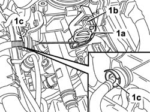
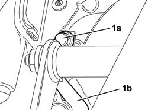
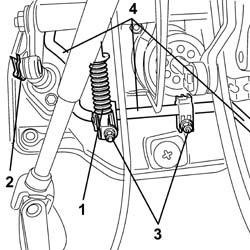

1068A15 accelerator pedal - r r for rhd versions
- Path
- Procedures > 10 ENGINE > 1068 ACCELERATOR CONTROLS > 1068A accelerator pedal control > 1068A15 accelerator pedal - r r for rhd versions
- Kind
- repair procedure (removal / refitting; the operation number is the code)
- Applies to
- all engines; all production periods
- Interactive page
- https://sloeber94.github.io/elrnDB-fDbl/en/#/2584253
Applies to: all engines; all production periods; only with equipment: Right hand drive
 Removing
Removing
 Refitting
RefittingOpen the bonnet.
Disconnect the positive battery terminal.
1048A10 air cleaner filtering element - replace
1. Disconnect the accelerator cable (1a) from throttle body (1b) after removing retaining clip (1c).

Applies to: all engines; all production periods; only with equipment: Right hand drive
1. Release the end of cable (1a) from accelerator pedal (1b).

Applies to: all engines; all production periods; only with equipment: Right hand drive
1. Remove the retaining clip from the clutch pedal reaction spring.
2. Remove the clutch pump push-rod retaining spring.
3. Unscrew the nuts securing the brake pedal retaining bracket to the pedal mount.
4. Remove the accelerator pedal.

Applies to: all engines; all production periods; only with equipment: Right hand drive
Refitting
RemovingPosition the accelerator pedal and then tighten the brake pedal retaining bracket nuts to the pedal mount.
Fit the clutch pump push-rod retaining clip.
Position the clutch pedal reaction spring retaining clip.
Working in the pedal area, secure the end of the accelerator pedal to the pedal.
Connect the accelerator cable to the throttle body and then fit the retaining clip.
1048A10 air cleaner filtering element - replace
Connect the positive battery terminal and close the bonnet.